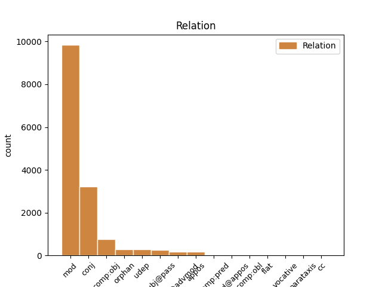
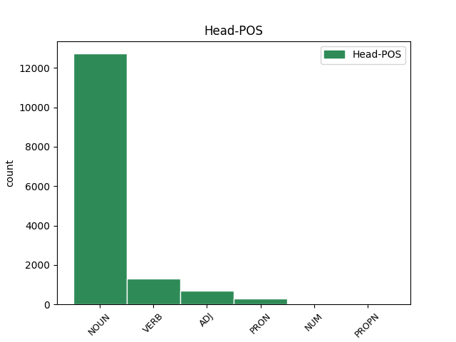
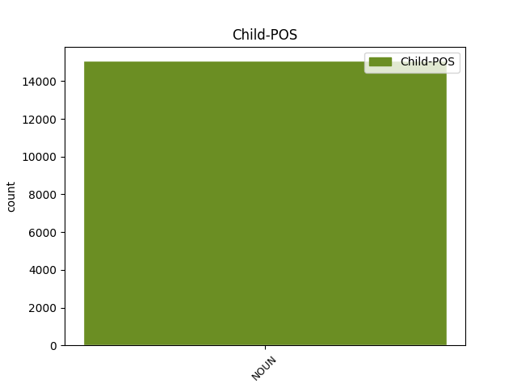

Distribution of features within this leaf



Agreement Rules sorted by frequency.
- When the dependent token is the modifer(mod) of the head token, and the dependent token is NOUN.
1 et _ _ _ _ 0 _ _ _
2 quanto _ _ _ _ 0 _ _ _
3 magis _ _ _ _ 0 _ _ _
4 proceditur _ _ _ _ 0 _ _ _
5 in _ _ _ _ 0 _ _ _
6 nobilitate _ _ _ _ 0 _ _ _
7 formarum _ _ _ _ 0 _ _ _
8 , _ _ _ _ 0 _ _ _
9 tanto _ _ _ _ 0 _ _ _
10 magis _ _ _ _ 0 _ _ _
11 invenitur _ _ _ _ 0 _ _ _
12 virtus virtus NOUN C1|grn1|casA|gen2|vgr1 Case=Nom|Degree=Pos|Gender=Fem|Number=Sing 0 _ _ _
13 formae forma NOUN A1|grn1|casB|gen2|vgr1 Case=Gen|Degree=Pos|Gender=Fem|Number=Sing 12 mod _ _
14 materiam _ _ _ _ 0 _ _ _
15 elementarem _ _ _ _ 0 _ _ _
16 excedere _ _ _ _ 0 _ _ _
17 , _ _ _ _ 0 _ _ _
18 sicut _ _ _ _ 0 _ _ _
19 anima _ _ _ _ 0 _ _ _
20 vegetabilis _ _ _ _ 0 _ _ _
21 plus _ _ _ _ 0 _ _ _
22 quam _ _ _ _ 0 _ _ _
23 forma _ _ _ _ 0 _ _ _
24 metalli _ _ _ _ 0 _ _ _
25 , _ _ _ _ 0 _ _ _
26 et _ _ _ _ 0 _ _ _
27 anima _ _ _ _ 0 _ _ _
28 sensibilis _ _ _ _ 0 _ _ _
29 plus _ _ _ _ 0 _ _ _
30 quam _ _ _ _ 0 _ _ _
31 anima _ _ _ _ 0 _ _ _
32 vegetabilis _ _ _ _ 0 _ _ _
33 . _ _ _ _ 0 _ _ _
1 cum _ _ _ _ 0 _ _ _
2 enim _ _ _ _ 0 _ _ _
3 forma _ _ _ _ 0 _ _ _
4 sit _ _ _ _ 0 _ _ _
5 actus _ _ _ _ 0 _ _ _
6 , _ _ _ _ 0 _ _ _
7 materia _ _ _ _ 0 _ _ _
8 vero _ _ _ _ 0 _ _ _
9 sit _ _ _ _ 0 _ _ _
10 ens _ _ _ _ 0 _ _ _
11 in _ _ _ _ 0 _ _ _
12 potentia _ _ _ _ 0 _ _ _
13 tantum _ _ _ _ 0 _ _ _
14 ; _ _ _ _ 0 _ _ _
15 nullo _ _ _ _ 0 _ _ _
16 modo _ _ _ _ 0 _ _ _
17 id _ _ _ _ 0 _ _ _
18 quod _ _ _ _ 0 _ _ _
19 est _ _ _ _ 0 _ _ _
20 ex _ _ _ _ 0 _ _ _
21 materia materia NOUN A1|grn1|casF|gen2 Case=Abl|Degree=Pos|Gender=Fem|Number=Sing 0 _ _ _
22 et _ _ _ _ 0 _ _ _
23 forma forma NOUN A1|grn1|casF|gen2 Case=Abl|Degree=Pos|Gender=Fem|Number=Sing 21 conj _ _
24 compositum _ _ _ _ 0 _ _ _
25 , _ _ _ _ 0 _ _ _
26 potest _ _ _ _ 0 _ _ _
27 esse _ _ _ _ 0 _ _ _
28 alterius _ _ _ _ 0 _ _ _
29 forma _ _ _ _ 0 _ _ _
30 secundum _ _ _ _ 0 _ _ _
31 se _ _ _ _ 0 _ _ _
32 totum _ _ _ _ 0 _ _ _
33 . _ _ _ _ 0 _ _ _
1 dicit _ _ _ _ 0 _ _ _
2 enim _ _ _ _ 0 _ _ _
3 primo _ _ _ _ 0 _ _ _
4 creatam creo VERB J2|modM|tem4|grp1|casD|gen2 Aspect=Perf|Case=Acc|Degree=Pos|Gender=Fem|Number=Sing|Tense=Past|VerbForm=Part|Voice=Pass 0 _ _ _
5 naturam natura NOUN A1|grn1|casD|gen2 Case=Acc|Degree=Pos|Gender=Fem|Number=Sing 4 subj@pass _ _
6 spiritualem _ _ _ _ 0 _ _ _
7 informem _ _ _ _ 0 _ _ _
8 , _ _ _ _ 0 _ _ _
9 et _ _ _ _ 0 _ _ _
10 naturam _ _ _ _ 0 _ _ _
11 corporalem _ _ _ _ 0 _ _ _
12 absque _ _ _ _ 0 _ _ _
13 omni _ _ _ _ 0 _ _ _
14 forma _ _ _ _ 0 _ _ _
15 ( _ _ _ _ 0 _ _ _
16 quam _ _ _ _ 0 _ _ _
17 dicit _ _ _ _ 0 _ _ _
18 primo _ _ _ _ 0 _ _ _
19 significari _ _ _ _ 0 _ _ _
20 nomine _ _ _ _ 0 _ _ _
21 terrae _ _ _ _ 0 _ _ _
22 et _ _ _ _ 0 _ _ _
23 aquae _ _ _ _ 0 _ _ _
24 ) _ _ _ _ 0 _ _ _
25 , _ _ _ _ 0 _ _ _
26 non _ _ _ _ 0 _ _ _
27 quia _ _ _ _ 0 _ _ _
28 haec _ _ _ _ 0 _ _ _
29 informitas _ _ _ _ 0 _ _ _
30 formationem _ _ _ _ 0 _ _ _
31 praecesserit _ _ _ _ 0 _ _ _
32 tempore _ _ _ _ 0 _ _ _
33 , _ _ _ _ 0 _ _ _
34 sed _ _ _ _ 0 _ _ _
35 origine _ _ _ _ 0 _ _ _
36 tantum _ _ _ _ 0 _ _ _
37 . _ _ _ _ 0 _ _ _
1 relinquitur _ _ _ _ 0 _ _ _
2 ergo _ _ _ _ 0 _ _ _
3 quod _ _ _ _ 0 _ _ _
4 anima _ _ _ _ 0 _ _ _
5 intellectiva _ _ _ _ 0 _ _ _
6 , _ _ _ _ 0 _ _ _
7 et _ _ _ _ 0 _ _ _
8 omnis _ _ _ _ 0 _ _ _
9 intellectualis _ _ _ _ 0 _ _ _
10 substantia _ _ _ _ 0 _ _ _
11 cognoscens cognosco VERB L2|modD|tem1|grp1|casA|gen2 Case=Nom|Degree=Pos|Gender=Fem|Number=Sing|Tense=Pres|VerbForm=Part|Voice=Act 0 _ _ _
12 formas forma NOUN A1|grn1|casM|gen2 Case=Acc|Degree=Pos|Gender=Fem|Number=Plur 11 comp:obj _ _
13 absolute _ _ _ _ 0 _ _ _
14 , _ _ _ _ 0 _ _ _
15 caret _ _ _ _ 0 _ _ _
16 compositione _ _ _ _ 0 _ _ _
17 formae _ _ _ _ 0 _ _ _
18 et _ _ _ _ 0 _ _ _
19 materiae _ _ _ _ 0 _ _ _
20 . _ _ _ _ 0 _ _ _
1 unde _ _ _ _ 0 _ _ _
2 sanitas _ _ _ _ 0 _ _ _
3 est _ _ _ _ 0 _ _ _
4 forma _ _ _ _ 0 _ _ _
5 corporis _ _ _ _ 0 _ _ _
6 , _ _ _ _ 0 _ _ _
7 et _ _ _ _ 0 _ _ _
8 scientia scientia NOUN A1|grn1|casA|gen2|vgr1 Case=Nom|Degree=Pos|Gender=Fem|Number=Sing 0 _ _ _
9 animae anima NOUN F1|grn1|casB|gen2|vgr1 Case=Gen|Degree=Pos|Gender=Fem|Number=Sing 8 orphan _ SpaceAfter=No
10 . _ _ _ _ 0 _ _ _
1 sed _ _ _ _ 0 _ _ _
2 omnium _ _ _ _ 0 _ _ _
3 corporum _ _ _ _ 0 _ _ _
4 est _ _ _ _ 0 _ _ _
5 una _ _ _ _ 0 _ _ _
6 forma forma NOUN A1|grn1|casA|gen2 Case=Nom|Degree=Pos|Gender=Fem|Number=Sing 0 _ _ _
7 , _ _ _ _ 0 _ _ _
8 scilicet _ _ _ _ 0 _ _ _
9 corporeitas corporeitas NOUN C1|grn1|casA|gen2 Case=Nom|Degree=Pos|Gender=Fem|Number=Sing 6 appos _ SpaceAfter=No
10 . _ _ _ _ 0 _ _ _
1 sic _ _ _ _ 0 _ _ _
2 ergo _ _ _ _ 0 _ _ _
3 oportuit _ _ _ _ 0 _ _ _
4 ordinem _ _ _ _ 0 _ _ _
5 divinae _ _ _ _ 0 _ _ _
6 sapientiae _ _ _ _ 0 _ _ _
7 manifestari _ _ _ _ 0 _ _ _
8 , _ _ _ _ 0 _ _ _
9 ut _ _ _ _ 0 _ _ _
10 primo _ _ _ _ 0 _ _ _
11 inter _ _ _ _ 0 _ _ _
12 opera _ _ _ _ 0 _ _ _
13 distinctionis _ _ _ _ 0 _ _ _
14 produceretur _ _ _ _ 0 _ _ _
15 lux lux NOUN C1|grn1|casA|gen2 Case=Nom|Degree=Pos|Gender=Fem|Number=Sing 0 _ _ _
16 , _ _ _ _ 0 _ _ _
17 tanquam _ _ _ _ 0 _ _ _
18 primi _ _ _ _ 0 _ _ _
19 corporis _ _ _ _ 0 _ _ _
20 forma forma NOUN A1|grn1|casA|gen2 Case=Nom|Degree=Pos|Gender=Fem|Number=Sing 15 mod@advmod _ SpaceAfter=No
21 , _ _ _ _ 0 _ _ _
22 et _ _ _ _ 0 _ _ _
23 tanquam _ _ _ _ 0 _ _ _
24 communior _ _ _ _ 0 _ _ _
25 . _ _ _ _ 0 _ _ _
1 ad _ _ _ _ 0 _ _ _
2 tertium _ _ _ _ 0 _ _ _
3 dicendum _ _ _ _ 0 _ _ _
4 quod _ _ _ _ 0 _ _ _
5 forma _ _ _ _ 0 _ _ _
6 est _ _ _ _ 0 _ _ _
7 causa causa NOUN A1|grn1|casA|gen2|vgr1 Case=Nom|Degree=Pos|Gender=Fem|Number=Sing 0 _ _ _
8 essendi _ _ _ _ 0 _ _ _
9 materiae materia NOUN A1|grn1|casC|gen2|vgr1 Case=Dat|Degree=Pos|Gender=Fem|Number=Sing 7 udep _ SpaceAfter=No
10 , _ _ _ _ 0 _ _ _
11 et _ _ _ _ 0 _ _ _
12 agens _ _ _ _ 0 _ _ _
13 , _ _ _ _ 0 _ _ _
14 unde _ _ _ _ 0 _ _ _
15 agens _ _ _ _ 0 _ _ _
16 , _ _ _ _ 0 _ _ _
17 inquantum _ _ _ _ 0 _ _ _
18 reducit _ _ _ _ 0 _ _ _
19 materiam _ _ _ _ 0 _ _ _
20 in _ _ _ _ 0 _ _ _
21 actum _ _ _ _ 0 _ _ _
22 formae _ _ _ _ 0 _ _ _
23 transmutando _ _ _ _ 0 _ _ _
24 , _ _ _ _ 0 _ _ _
25 est _ _ _ _ 0 _ _ _
26 ei _ _ _ _ 0 _ _ _
27 causa _ _ _ _ 0 _ _ _
28 essendi _ _ _ _ 0 _ _ _
29 . _ _ _ _ 0 _ _ _
1 sed _ _ _ _ 0 _ _ _
2 per _ _ _ _ 0 _ _ _
3 se _ _ _ _ 0 _ _ _
4 existens _ _ _ _ 0 _ _ _
5 quandoque _ _ _ _ 0 _ _ _
6 potest _ _ _ _ 0 _ _ _
7 dici _ _ _ _ 0 _ _ _
8 aliquid _ _ _ _ 0 _ _ _
9 si _ _ _ _ 0 _ _ _
10 non _ _ _ _ 0 _ _ _
11 sit _ _ _ _ 0 _ _ _
12 inhaerens inhaerens ADJ C1|grn1|casA|gen3|vgr1 Case=Nom|Degree=Pos|Gender=Neut|Number=Sing 0 _ _ _
13 ut _ _ _ _ 0 _ _ _
14 accidens accidens NOUN C1|grn1|casA|gen3 Case=Nom|Degree=Pos|Gender=Neut|Number=Sing 12 comp:pred _ _
15 vel _ _ _ _ 0 _ _ _
16 ut _ _ _ _ 0 _ _ _
17 forma _ _ _ _ 0 _ _ _
18 materialis _ _ _ _ 0 _ _ _
19 , _ _ _ _ 0 _ _ _
20 etiam _ _ _ _ 0 _ _ _
21 si _ _ _ _ 0 _ _ _
22 sit _ _ _ _ 0 _ _ _
23 pars _ _ _ _ 0 _ _ _
24 . _ _ _ _ 0 _ _ _
1 a _ _ _ _ 0 _ _ _
2 forma _ _ _ _ 0 _ _ _
3 autem _ _ _ _ 0 _ _ _
4 in _ _ _ _ 0 _ _ _
5 materia _ _ _ _ 0 _ _ _
6 tria tres NUM C1|grn1|casJ|gen3 Case=Nom|Degree=Pos|Gender=Neut|Number=Plur|NumType=Card 0 _ _ _
7 causantur _ _ _ _ 0 _ _ _
8 ; _ _ _ _ 0 _ _ _
9 scilicet _ _ _ _ 0 _ _ _
10 esse esse NOUN G1|casA|gen3 Case=Nom|Gender=Neut|Number=Sing 6 mod@appos _ _
11 substantiale _ _ _ _ 0 _ _ _
12 , _ _ _ _ 0 _ _ _
13 vires _ _ _ _ 0 _ _ _
14 , _ _ _ _ 0 _ _ _
15 et _ _ _ _ 0 _ _ _
16 formae _ _ _ _ 0 _ _ _
17 secundariae _ _ _ _ 0 _ _ _
18 , _ _ _ _ 0 _ _ _
19 scilicet _ _ _ _ 0 _ _ _
20 accidentales _ _ _ _ 0 _ _ _
21 , _ _ _ _ 0 _ _ _
22 et _ _ _ _ 0 _ _ _
23 amborum _ _ _ _ 0 _ _ _
24 conservatio _ _ _ _ 0 _ _ _
25 . _ _ _ _ 0 _ _ _
1 ostendit _ _ _ _ 0 _ _ _
2 autem _ _ _ _ 0 _ _ _
3 apostolus _ _ _ _ 0 _ _ _
4 eum _ _ _ _ 0 _ _ _
5 esse _ _ _ _ 0 _ _ _
6 minoratum _ _ _ _ 0 _ _ _
7 secundum _ _ _ _ 0 _ _ _
8 assumptionem _ _ _ _ 0 _ _ _
9 formae _ _ _ _ 0 _ _ _
10 servilis _ _ _ _ 0 _ _ _
11 , _ _ _ _ 0 _ _ _
12 ita _ _ _ _ 0 _ _ _
13 tamen _ _ _ _ 0 _ _ _
14 quod _ _ _ _ 0 _ _ _
15 deo deus PROPN F1|grn1|casC|gen1 Case=Dat|Degree=Pos|Gender=Masc|Number=Sing 0 _ _ _
16 patri pater NOUN C1|grn1|casC|gen1 Case=Dat|Degree=Pos|Gender=Masc|Number=Sing 15 flat _ _
17 aequalis _ _ _ _ 0 _ _ _
18 existat _ _ _ _ 0 _ _ _
19 secundum _ _ _ _ 0 _ _ _
20 formam _ _ _ _ 0 _ _ _
21 divinam _ _ _ _ 0 _ _ _
22 : _ _ _ _ 0 _ _ _
1 sed _ _ _ _ 0 _ _ _
2 omne _ _ _ _ 0 _ _ _
3 quod _ _ _ _ 0 _ _ _
4 habet _ _ _ _ 0 _ _ _
5 materiam _ _ _ _ 0 _ _ _
6 , _ _ _ _ 0 _ _ _
7 habet _ _ _ _ 0 _ _ _
8 etiam _ _ _ _ 0 _ _ _
9 substantialem _ _ _ _ 0 _ _ _
10 formam _ _ _ _ 0 _ _ _
11 dantem do VERB J2|modD|tem1|grp1|casD|gen2 Case=Acc|Degree=Pos|Gender=Fem|Number=Sing|Tense=Pres|VerbForm=Part|Voice=Act 0 _ _ _
12 esse _ _ _ _ 0 _ _ _
13 materiae materia NOUN A1|grn1|casC|gen2|vgr1 Case=Dat|Degree=Pos|Gender=Fem|Number=Sing 11 comp:obl _ SpaceAfter=No
14 . _ _ _ _ 0 _ _ _
1 beati beatus NOUN B1|grn1|casB|gen1 Case=Gen|Degree=Pos|Gender=Masc|Number=Sing 0 _ _ _
2 qui _ _ _ _ 0 _ _ _
3 habitant _ _ _ _ 0 _ _ _
4 in _ _ _ _ 0 _ _ _
5 domo _ _ _ _ 0 _ _ _
6 tua _ _ _ _ 0 _ _ _
7 , _ _ _ _ 0 _ _ _
8 domine dominus NOUN B1|grn1|casE|gen1|comH Case=Voc|Degree=Pos|Gender=Masc|Number=Sing 1 vocative _ SpaceAfter=No
9 : _ _ _ _ 0 _ _ _
Disagree Examples:
1 secundo _ _ _ _ 0 _ _ _
2 , _ _ _ _ 0 _ _ _
3 ex _ _ _ _ 0 _ _ _
4 principio principium NOUN B1|grn1|casF|gen3 Case=Abl|Degree=Pos|Gender=Neut|Number=Sing 0 _ _ _
5 operationis operatio NOUN C1|grn1|casB|gen2|vgr1 Case=Gen|Degree=Pos|Gender=Fem|Number=Sing 4 mod _ SpaceAfter=No
6 : _ _ _ _ 0 _ _ _
7 ut _ _ _ _ 0 _ _ _
8 sit _ _ _ _ 0 _ _ _
9 altissimae _ _ _ _ 0 _ _ _
10 potentiae _ _ _ _ 0 _ _ _
11 . _ _ _ _ 0 _ _ _
1 unde _ _ _ _ 0 _ _ _
2 secundum _ _ _ _ 0 _ _ _
3 operationem operatio NOUN C1|grn1|casD|gen2|vgr1 Case=Acc|Degree=Pos|Gender=Fem|Number=Sing 0 _ _ _
4 sensus sensus NOUN D1|grn1|casB|gen1 Case=Gen|Degree=Pos|Gender=Masc|Number=Sing 3 mod _ _
5 non _ _ _ _ 0 _ _ _
6 est _ _ _ _ 0 _ _ _
7 in _ _ _ _ 0 _ _ _
8 nobis _ _ _ _ 0 _ _ _
9 felicitas _ _ _ _ 0 _ _ _
10 , _ _ _ _ 0 _ _ _
11 sed _ _ _ _ 0 _ _ _
12 secundum _ _ _ _ 0 _ _ _
13 operationem _ _ _ _ 0 _ _ _
14 intellectus _ _ _ _ 0 _ _ _
15 et _ _ _ _ 0 _ _ _
16 per _ _ _ _ 0 _ _ _
17 habitum _ _ _ _ 0 _ _ _
18 perfecti _ _ _ _ 0 _ _ _
19 . _ _ _ _ 0 _ _ _
1 unde _ _ _ _ 0 _ _ _
2 secundum _ _ _ _ 0 _ _ _
3 operationem _ _ _ _ 0 _ _ _
4 sensus _ _ _ _ 0 _ _ _
5 non _ _ _ _ 0 _ _ _
6 est _ _ _ _ 0 _ _ _
7 in _ _ _ _ 0 _ _ _
8 nobis _ _ _ _ 0 _ _ _
9 felicitas _ _ _ _ 0 _ _ _
10 , _ _ _ _ 0 _ _ _
11 sed _ _ _ _ 0 _ _ _
12 secundum _ _ _ _ 0 _ _ _
13 operationem operatio NOUN C1|grn1|casD|gen2|vgr1 Case=Acc|Degree=Pos|Gender=Fem|Number=Sing 0 _ _ _
14 intellectus intellectus NOUN D1|grn1|casB|gen1 Case=Gen|Degree=Pos|Gender=Masc|Number=Sing 13 mod _ _
15 et _ _ _ _ 0 _ _ _
16 per _ _ _ _ 0 _ _ _
17 habitum _ _ _ _ 0 _ _ _
18 perfecti _ _ _ _ 0 _ _ _
19 . _ _ _ _ 0 _ _ _
1 tertio _ _ _ _ 0 _ _ _
2 , _ _ _ _ 0 _ _ _
3 ex _ _ _ _ 0 _ _ _
4 operationis operatio NOUN C1|grn1|casB|gen2|vgr1 Case=Gen|Degree=Pos|Gender=Fem|Number=Sing 5 mod _ _
5 obiecto objectum NOUN B1|grn1|casF|gen3|vgr2 Case=Abl|Degree=Pos|Gender=Neut|Number=Sing 0 _ _ _
6 . _ _ _ _ 0 _ _ _
1 unde _ _ _ _ 0 _ _ _
2 boetius _ _ _ _ 0 _ _ _
3 dicit _ _ _ _ 0 _ _ _
4 quod _ _ _ _ 0 _ _ _
5 beatitudo _ _ _ _ 0 _ _ _
6 est _ _ _ _ 0 _ _ _
7 status _ _ _ _ 0 _ _ _
8 omnium _ _ _ _ 0 _ _ _
9 bonorum bonum NOUN B1|grn1|casK|gen3 Case=Gen|Degree=Pos|Gender=Neut|Number=Plur 10 mod _ _
10 congregatione congregatio NOUN C1|grn1|casF|gen2|comH Case=Abl|Degree=Pos|Gender=Fem|Number=Sing 0 _ _ _
11 perfectus _ _ _ _ 0 _ _ _
12 . _ _ _ _ 0 _ _ _